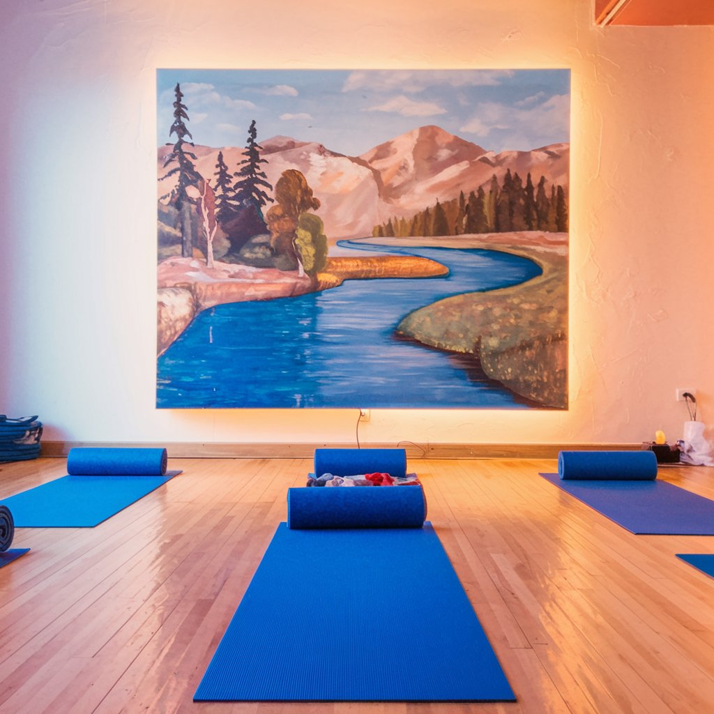
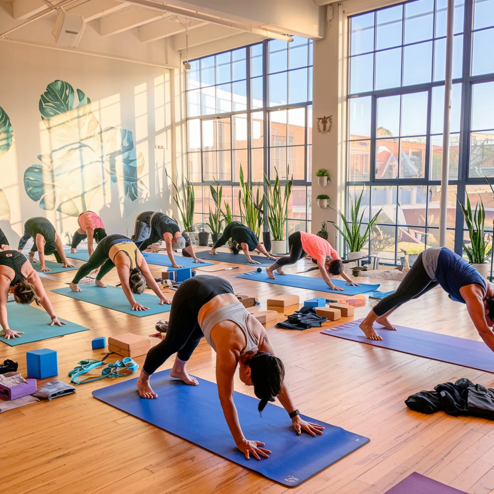
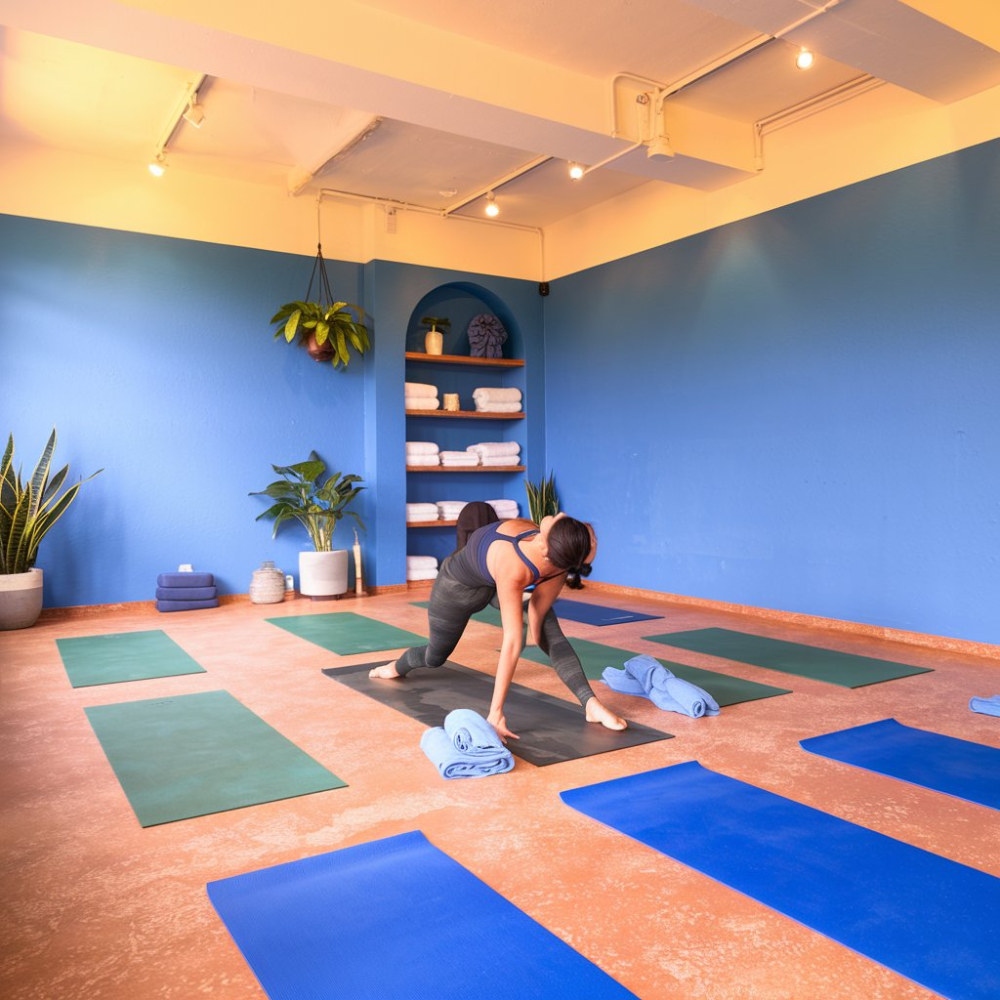

Deseja Meditar?
Yoga é uma prática milenar que tem como objetivo promover o equilíbrio entre corpo e mente. Além de ser uma atividade física, o Yoga também é uma filosofia de vida que busca a harmonia entre o indivíduo e o universo. A prática do Yoga traz inúmeros benefícios para a saúde física e mental, ajudando a melhorar a qualidade de vida e o bem-estar.
Entre os benefícios do Yoga para a saúde física estão o fortalecimento dos músculos, o aumento da flexibilidade, a melhora da postura e o alívio de dores musculares. Além disso, o Yoga também ajuda a melhorar a circulação sanguínea, a reduzir o estresse e a ansiedade, e a promover o relaxamento e o equilíbrio emocional.
Para quem busca uma atividade física que promova o bem-estar e a qualidade de vida, o Yoga é uma excelente opção. Além de ser uma prática acessível a todas as idades e condições físicas, o Yoga também pode ser praticado em casa, sem a necessidade de equipamentos especiais. Com a prática regular do Yoga, é possível obter inúmeros benefícios para a saúde física e mental, promovendo o equilíbrio entre corpo e mente e melhorando a qualidade de vida.
Melhora da flexibilidade e postura: O Yoga trabalha o alongamento de diferentes grupos musculares, expandindo a amplitude dos movimentos e reduzindo a rigidez muscular e articular. Com a prática regular, você desenvolve maior consciência corporal, o que ajuda a corrigir desequilíbrios posturais e alinhar o corpo.
Fortalecimento muscular: Mesmo sem utilizar pesos, as posturas (asanas) do Yoga trabalham com o peso do próprio corpo, promovendo resistência e tonificação muscular. Isso contribui para um corpo mais definido e músculos tonificados.
Alívio de dores corporais: A prática ajuda a liberar tensões musculares e proporciona maior flexibilidade, aliviando dores causadas por escoliose, hérnia de disco, fibromialgia e contraturas musculares. A maior consciência corporal permite identificar e corrigir posturas inadequadas que podem causar dores.
Melhorar do sistema cardiorrespiratório: O Yoga regula o sistema nervoso, melhora a circulação sanguínea, controla os batimentos cardíacos e a pressão arterial. Os exercícios de respiração (pranayama) aumentam a capacidade pulmonar e melhoram a oxigenação do corpo.
Redução do estresse e ansiedade: As técnicas de respiração e meditação ajudam a reduzir os níveis de cortisol (hormônio do estresse), induzindo um estado de calma e clareza mental. A prática promove equilíbrio emocional, sensação de paz interior e bem-estar
Melhora da qualidade do sono: O Yoga estimula a produção de melatonina, hormônio que regula o ciclo do sono, proporcionando um descanso mais profundo e reparador. O relaxamento corporal também contribui para noites mais tranquilas.
Alívio de sintomas depressivos: A prática aumenta a sensação de bem-estar emocional e social, combatendo sintomas depressivos. O aumento da produção de serotonina (hormônio da felicidade) contribui para esse efeito positivo.
Aumento da concentração e foco: A meditação e as técnicas de respiração praticadas no Yoga ajudam a desenvolver maior foco, atenção e qualidade dos pensamentos.